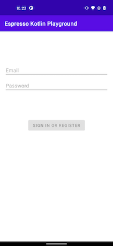
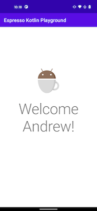

Navigation DSL
Writing Espresso tests with the page objects so far has helped in code readability and maintainability. To help accelerate writing the tests in the app, a navigation domain specific language (DSL) can be made to help navigate and make assertions on the current screen in a test.
Info
To build the navigation DSL, it will help to have a basic understanding of higher order functions and function literals with receiver to better understand how the type safe builders in the DSL are being made.
Simple DSL
Considering the two pages in the app, the first method to navigate would be from the LoginPage to the LoggedInPage.
| LoginPage | LoggedInPage |
|---|---|
|  |  |
The simplest way to implement a navigation method on a page object would be to make use of some .apply { } blocks.
class LoginPage : BasePage {
fun goToLoggedInPage(block: LoggedInPage.() -> Unit): LoggedInPage {
onSignInOrRegisterButton().click()
return LoggedInPage().apply {
assertScreen()
block()
}
}
}
Then a simple test could look like this:
@Test fun successfulLogin() {
LoginPage().apply {
assertScreen()
enterInfo(username, password)
}.goToLoggedInPage {
onBodyText().verifyText("Welcome Andrew!")
}
}
This simple test is a good start in the DSL, however there are a few areas of improvement.
- every navigation function parameter will have duplication to declare the function literal with a receiver on the navigated to page object
- the navigation function is verbose to always click a button, assert the screen was navigated to, then apply the lambda to its receiver
- the first screen in the test will always be asserting the screen and a lambda with a receiver on that page
PageScope
To simplify the function parameter of a navigation function and reduce the need to always declare it as a lambda with a receiver. Creating a type alias with a generic can help simplify the function parameter declaration.
typealias PageScope <T> = T.() -> Unit
Now the navigation function can be declared with the following syntax.
class LoginPage : BasePage {
fun goToLoggedInPage(block: PageScope<LoginPage>): LoggedInPage {}
}
Navigate click helper
Most navigation methods typically happen in the following order.
- some click on the screen
- instantiate the page object being navigated to
- assert screen navigated to is showing
- apply the
PageScopeto the page so any interaction from the test can occur
To help make writing a click navigation function easier, an extension function on BasePage that takes the view being clicked on and the PageScope as a parameter.
inline fun <reified T : BasePage> BasePage.navigateToPageWithClick(
viewInteraction: ViewInteraction,
block: PageScope<T>
): T {
viewInteraction.click() // 1
return T::class.java.newInstance().apply { // 2
assertScreen() // 3
block() // 4
}
}
Now the navigation method can be simplified to the following:
class LoginPage : BasePage {
fun goToLoggedInPage(block: PageScope<LoggedInPage>): LoggedInPage =
navigateToPageWithClick(onSignInOrRegisterButton(), block)
}
Start navigation
The start of every test instantiates a new page object and asserts that the screen was show before applying the PageScope. To simplify this task, some logic from the click helper function can be reused.
inline fun <reified T : BasePage> startOnPage(block: PageScope<T> = {}): T =
T::class.java.newInstance().apply {
assertScreen()
block()
}
Navigate without interaction
It may be possible that a test will need to navigate to a screen but not interact with that page. So it would be desired to continue navigation without needing to supply another lambda which is simple by using a default argument as an empty lambda in the navigation function.
class LoggedInPage : BasePage {
fun goToSettings(block: PageScope<Settings> = {}): SettingsPage =
navigateToWithClick(onSettings(), block)
}
DSL Structure
Putting everything together, the basic of the structure of the navigation DSL would have a test looking like the following:
@Test fun successfulLogin() {
startOnPage<LoginPage> { // start navigation
// this: LoginPage
// interact with screen
enterInfo(username, password)
}.goToLoggedInPage { // chained methods navigate to another screen
// this: LoggedInPage
// or make assertions
onBodyText().verifyText("Welcome Andrew!")
}.goToSettings() // default empty scoped lambda can assert navigation to a screen but not interact
}
- Navigation is done with
startOnPage()or a function in a page object, which should provides a scoped lambda to the page - Each navigation function also returns the page being navigated to in order to chain navigation methods after scoped lambdas
- View interactions and assertions occur inside of each scoped lambda with the page as its receiver
- Any
PageScopefunction parameter should provide a default empty lambda so navigation can be asserted, but not require interaction with a screen.
The test is starting to look a lot cleaner utilizing the page object pattern, extension functions, and creating a navigation DSL. However the production code is hard coded to get the test to pass and in the next couple sections we will learn about a couple different approaches in making mock tests with more dynamic production looking code.
References
- Source code